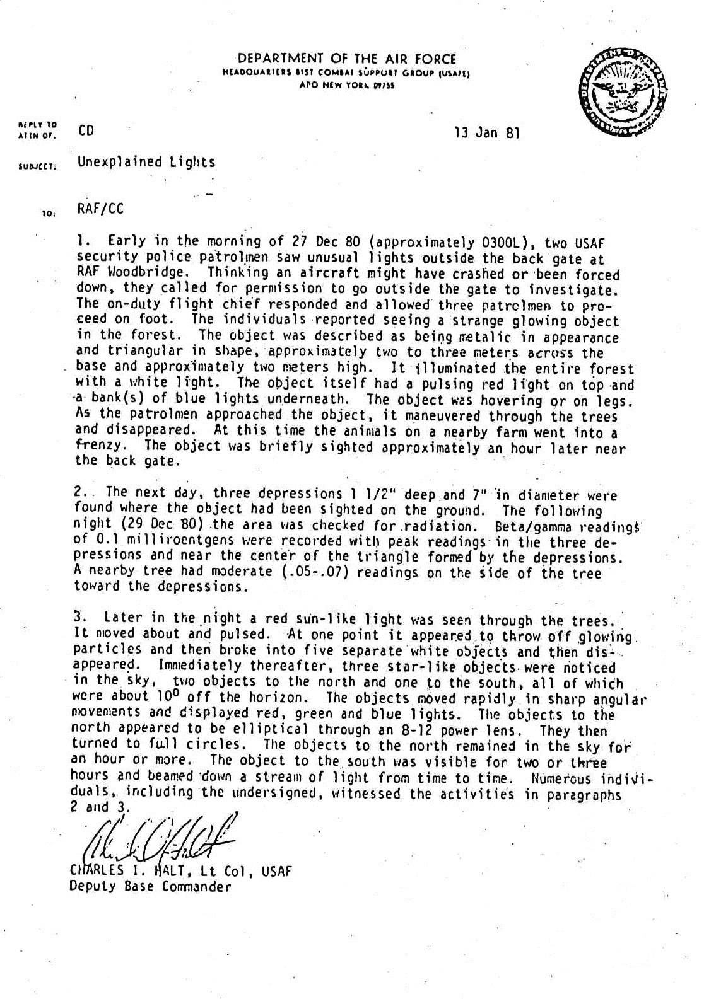
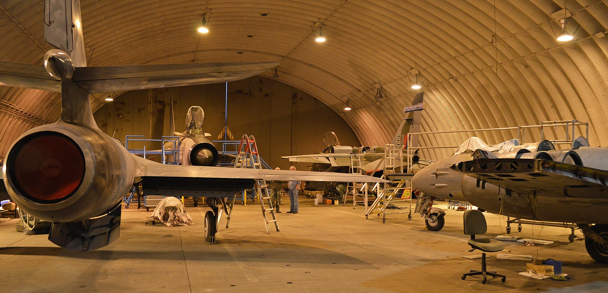

IncidentRendlesham Forest Incident (26–28 December 1980)
USAF security police from RAF Bentwaters and RAF Woodbridge observed and approached a metallic object in Rendlesham Forest over three consecutive nights; the deputy base commander recorded the events in a memorandum two weeks later.
From the creepy index — rank №11. Lt. Col. Charles Halt's 13 January 1981 official USAF memo to the UK Ministry of Defence — released under FOIA in 1983 — formally documents radiation readings approximately ten times background at three indentations in the forest floor, with the peak readings taken at the indentations themselves (0.05–0.07 mR).




What's documented
At approximately 03:00 on 26 December 1980, Staff Sgt. Jim Penniston and Airman 1st Class John Burroughs of the 81st Security Police Squadron at RAF Woodbridge were dispatched to investigate lights in the East Gate of Rendlesham Forest. Penniston approached an object he described as a triangular metallic craft about 3 meters across, took notes and sketches, and reported touching it. On the night of 27–28 December, Lt. Col. Charles Halt led a second investigation team into the forest with a portable Geiger counter and a microcassette recorder. The 18-minute ‘Halt tape’ is one of the few contemporaneous audio records of a UFO investigation in progress; the Halt memorandum was filed with the British Ministry of Defence on 13 January 1981.
Notable & intriguing
-
The Halt memorandum, signed by Lt. Col. Charles I. Halt, 81st Combat Support Group, RAF Bentwaters and dated 13 January 1981, was sent to the British Ministry of Defence and reports radiation readings 'in the three landing impressions… 0.1 milliroentgens' — about ten times the area background.
Halt Memorandum, 13 January 1981, declassified by the British MoD, 1983
-
The Halt tape — an 18-minute on-the-scene cassette recording made by Lt. Col. Halt and his team on the night of 27–28 December 1980 — captures contemporaneous statements including 'I see it too — what is it?' and 'it's coming this way… now it's stopped.'
Halt cassette recording, declassified 1984; transcript, Nick Pope (former MoD Sec(AS)2a), *Encounter in Rendlesham Forest*, 2014
-
The British Ministry of Defence's internal file on Rendlesham was released to The National Archives in 2010 (DEFE 24/1948); it includes a 1981 internal note stating the investigation was 'of no defence interest' — written before MoD personnel had interviewed any of the USAF witnesses.
UK National Archives, DEFE 24/1948
-
Sgt. Jim Penniston and A1C John Burroughs both submitted FOIA medical records requests in 2010; both files showed treatment for symptoms consistent with radiation exposure, with Burroughs being granted 100% disability by the U.S. Department of Veterans Affairs in 2014 — the first disability award explicitly tied to a UFO encounter.
U.S. Department of Veterans Affairs award letter to John Burroughs, 2014; MIT Press, *UFOs and the National Security State* (Richard Dolan, vol. 2)